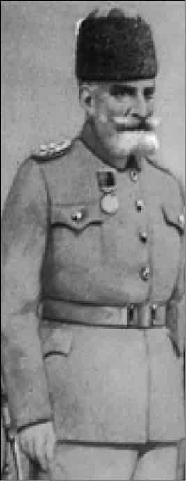
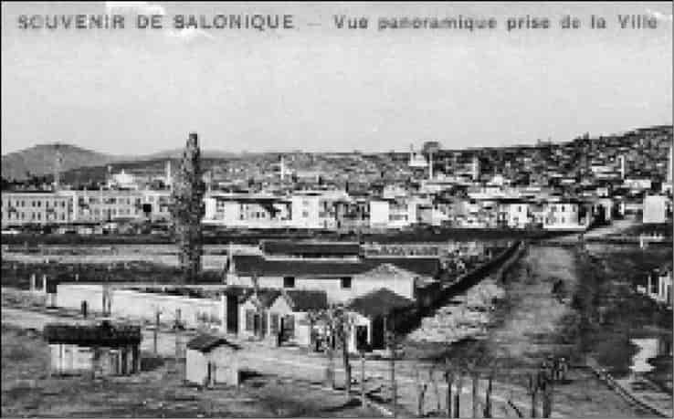
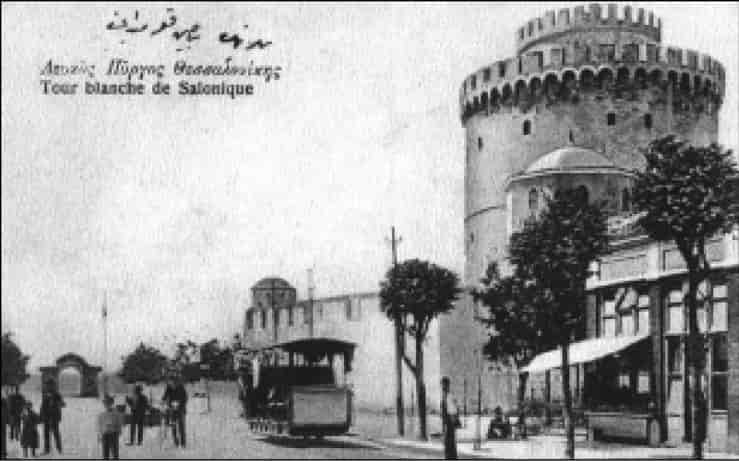
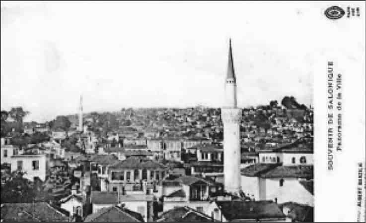
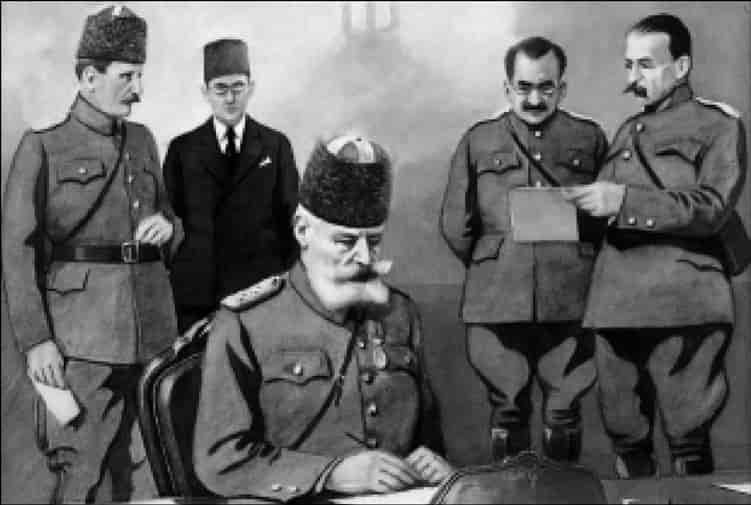
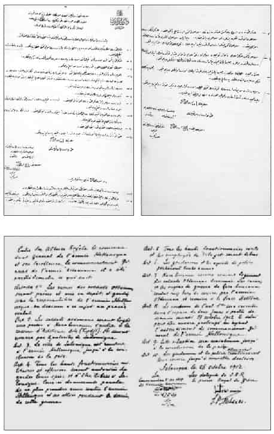
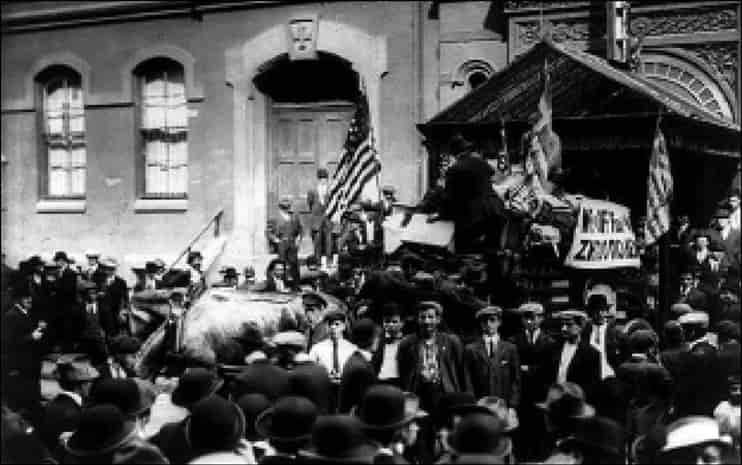

3
Selanik teslim ediliyor
1912 yılının 23-24 Ekimi’nde Osmanlı ordusunun Sırplar karşısında Kumanova’da bozguna uğradığını, Sırpların Üsküp’ü ele geçirerek Manastır’a doğru yürüdüğünü görmüştük. Osmanlılar 16-18 Ekim’de Manastır savaşını da kaybetmiş, Sırplar Manastır’a girmişti.
Osmanlı ordusu Kosova, Kumanova ve Manastır’da Sırplarla savaşırken ve savaşı kaybederken, güneyde de saldırıya geçen Yunan ordusuyla savaşmaktadır. Burada Osmanlı ordusu çabuk toparlanamadı. Alasonya şehrinin açıklarında 15.000 kişilik Türk ordusuna karşılık 80.000 kişilik Yunan ordusu savaştı.1
Netice malum: Osmanlı ordusu yenildi, Yunan ordusu Alasonya’ya girdi.2 Aram Andonyan şöyle anlatır:
Yunanlar Alasonya’ya gece vakti girdiler. Minarelere çıkan altı hoca düşmanı tüfek ateşi ve lanetle karşıladı. Bu kaçamamış olan tüm Müslümanların kurban gittikleri bir katliama bahane oluşturdu. En çok vahşeti yakın köylerin Rum sakinleri yaptılar. 1897’deki şiddet hareketlerinin öcünü almak için şehre girdiler. Katliamdan sonra bütün İslam evlerini tahrip ettiler ya da yaktılar. Tüm şehir sabaha kadar muazzam bir yangın manzarası oluşturdu. Oysa Türkler çekilirken kimseye zarar vermemişlerdi.3
Aynı tarzda büyük bir katliam, Yunan ordusu Serfice’ye girdiğinde de yaşandı.

Hasan Tahsin Paşa.
Selanik’e Bulgarlardan önce girmek isteyen Yunan ordusu stratejik bir yer olan Yenice’de toplanmaktadır. Burada 8. Mürettep Kolordu denilen Osmanlı kolordusu vardır. 8. Mürettep Kolordu’nun kumandanı Hasan Tahsin Paşa’dır. Kalitesiz, gayretsiz bir askerdir. Askeri eğitimi de heyecanı da böyle bir savaşa kumanda etmeye müsait değildir. Hasan Tahsin Paşa, Yunan ordusunun burada toplanacağını bildiği halde, mevzileri denetlemeden bir hafta süreyle Kozana’da oturup oyalanmış, 21 Ekim’de Yunan ordusunun yaklaşmakta olduğunu gördüğü halde Yenice’ye, ordusunun başına gelmemiştir!4
Hasan Tahsin Paşa, Selanik’i Yunanlara teslim edecek komutandır.
Bir haftayı boşa geçiren Hasan Tahsin Paşa, Yenice’de nihayet 1 Kasım günü Yunan ordusu topçu atışına başlayınca Kavala’da bulunan Osmanlı alayının Yenice’ye gelmesi için emir verdi! Drama, Görice, Kozana ve Yaylacık’ta bulunan Osmanlı kuvvetlerine de Yenice’ye doğru yola çıkmaları emrini verdi; Yenice bölgesine geldiklerinde nerelerde mevzileneceklerini bildirdi. Askeri uzmanlar bu emirlerin askerlik bilimi bakımından isabetli olduğunu belirtirler. Fakat çok gecikilmiş, hatta iş işten geçmişti.
Dahası, akıl almaz bir saat hatası yapılmıştı. Hasan Tahsin Paşa’nın emirlerinde, askeri birliklerin “öğleden sonra saat 02.00’de” yola çıkmaları bildirilmişti, “öğleden önce” yani sabaha karşı saat 02.00’de yola çıkmalarının yazılması gerekiyordu. Öğleden önce ile sonranın karıştırılması, zaten gecikmiş olan birliklerin gelmesini bir 12 saat daha geciktirmişti!
Bu birlikler 2 Kasım günü öğle saatlerinde Yenice’ye yaklaştıklarında Osmanlı ordusu bozulmuş, topçular geri çekilmeye başlamıştı. Savaş kaybedilmişti.5
Osmanlı genelkurmayından bir yetkili, Le Petit Journal gazetesine yaptığı açıklamada, Osmanlı ordusunun nasıl kötü yönetilip bozguna uğradığını anlatarak şöyle diyordu:
Birliklerimizin kuruluşu iyi değildi. 800 kişilik bir birlikte eğitim görmüş sadece 150 asker vardı, geri kalanı eğitimsiz redif askerleri ve gönüllülerdi. Yunan mitralyöz ve mükemmel topçu atışının karşısında kaçanlar bunlardı. Askerlerimizin kaçmasına engel olmak için başlarına nöbetçi dikmek zorundaydık... Sonra, Yunan subayları ateşimiz karşısında ilerlerken, bizim subayların çoğu savaş meydanını terk ediyordu. Bunu itiraf etmekten utanç duyuyorum.6
Balkan bozgunlarımız hep böyle utanç vericidir...
Artık Yunan ordusuna Selanik yolu açılmıştır; bu yenilginin sorumlusu, Hasan Tahsin Paşa’dır.7
Fevzi Çakmak, Selanik ve civarını savunmakla görevli 8. Mürettep Kolordu’nun kumandanlığına Hasan Tahsin Paşa’yı tayin eden Garp Ordusu Kumandanı Ali Rıza Paşa’yı eleştirir. Bu kolordunun kumandanlığına Hasan Tahsin gibi Jandarma’dan gelme, kabiliyetsiz ve hamiyetsiz biri atanacağına, mesela Yanya savunmasının kahraman kumandanı Kurmay Albay Esat Bey (Paşa) gibi Almanya’da eğitim görmüş, kurmay vasfına sahip dirayetli bir kumandan tayin edilmiş olsaydı, Yenice savaşının, dolayısıyla Selanik’in akıbetinin farklı olacağını belirtir.8
Gerçekten Hasan Tahsin Paşa kurmay bile değildi. Jandarma subaylığından paşa olmuştu. Böyle bir savaşı planlayacak, strateji ve taktiklerini belirleyecek, sevk ve idaresini yapabilecek kabiliyetten uzaktı. Aslında Selanik vilayeti gibi son derece önemli bir vilayeti savunmakla görevli Alasonya ordusu kumandanlığına Hasan Tahsin değil, Almanya’da okumuş, birikimli bir kurmay olan Mahmut Şevket Paşa tayin edilmişti. 31 Mart Vakası sırasında İstanbul’a yürüyerek olayı bastıran Hareket Ordusu’nun ünlü kumandanı Mahmut Şevket Paşa...
Fevzi Çakmak, bu ordunun başında mesela Yanya kahramanı Esat Paşa gibi gayretli ve iyi yetişmiş bir kumandan olsaydı, savaşın kazanılabileceğini yazmıştır. Biz de Mahmut Şevket Paşa olsaydı savaşın kazanılabileceğini düşünebiliriz. Fakat!.. Mahmut Şevket Paşa, sorumluluktan kaçmış, bu zor fakat şerefli görevi kabul etmemişti!
Hasan Tahsin Paşa yüzünden Yunan ordusunun Selanik’e yürüdüğü o karanlık ve boğucu günlerde, Mabeyn (Saray) Başkâtibi Ali Fuat Bey sarayda karşılaştığı Mahmut Şevket Paşa’ya sormuştu:
Niçin istifa ederek kumandayı böyle ehliyetsiz birine bıraktınız?!
Mahmut Şevket Paşa’nın cevabı utanç vericidir:
Canım efendim ne yapayım, bu benim şöhretimi ve askeri şerefimi ihlal için yapılmıştı; şöhretimi nasıl feda ederim?!9
Bu elbette ileride İttihatçılar tarafından sadrazam yapılacak olan Mahmut Şevket Paşa için utanılacak bir durumdur. Fakat sadece o mu? Ordunun, politika ve entrika yüzünden nasıl ruhunu kaybettiğini gösteren feci örneklerden biridir. Her cephede bozguna uğramasında bu ruh kaybı en büyük sebepti.
En kritik cephelerden birinin kumandanı olan Hasan Tahsin Paşa yüzünden Yenice savaşını kaybeden 8. Kolordu, elinde kalan 20.000 kişilik kuvvetle Selanik’e doğru çekildi. O sırada Selanik’e bir an önce girmek için Bulgar ve Yunan orduları yarış halindedir.
Osmanlı vilayeti Selanik
Balkan Harbi öncesinde Selanik 35.000 kilometrekare genişliğinde, 1.340.000 nüfuslu, büyük ve gelişmiş bir Osmanlı vilayetidir. Selanik merkez sancağından başka Serez, Drama, Taşoz sancaklarına ve bunlara bağlı 27 ilçeye sahiptir.
Yunan tarihçiler de Selanik’te çoğunluğun Müslüman olduğunu kabul ediyor. Arkadaşımız Yorgo Kırbaki’nin “Balkan Savaşları öncesi Selanik’in nüfus yapısı nasıl?” sorusuna Yunan tarihçi Vasilis Nikoltsos’un cevabı şöyle:
Vasilis Nikoltsos: Pek çok Müslüman vardı. Yunanlar da vardı, başka ülkelerin vatandaşları da vardı. Fransızlar, Avusturyalılar, Ruslar vardı. Makedonya’da bütün Avrupa milletlerini bulmak mümkündü. Ancak çoğunluk Osmanlılardı. Yunanlar Makedonya’nın tüm şehirlerinde ticarete hâkimdi. Makedonya’da Yahudi nüfus da yaşıyordu.
Osmanlı döneminde Selanik



Sultan II. Murad tarafından Venediklilerden alınan Selanik’in sembolü Beyaz Kule’dir. Yunanlar Bizans kalesi olduğunu iddia ederler. Fakat tarihçi Heath Lowry kulenin Kanuni Sultan Süleyman zamanında Osmanlılar tarafından yapıldığını tarihi kayıt ve kitabe ile ispat etmiştir.10
Abdülhamid tarafından beyaza boyatıldıktan sonra Beyaz Kule oldu.11
Selanik, Osmanlı ve bütün Balkanlar için son derece önemli bir merkezdir, adeta Balkanlar’da Osmanlı’nın başkentidir.
Selanik kentinde 1900’lerin başında 57 cami, 21 sinagog ve 16 kilise bulunuyordu. İmparatorlukta Müslümanların da Yahudi ve Hıristiyanların da en modern okulları Selanik’teydi.12
Mahalle sayıları da nüfus hakkında bir fikir verir. Tarihçi Semavi Eyice’ye göre, 16. yüzyılda Selanik’te 48 Müslüman, 14 Hıristiyan ve 21 Musevi mahallesi vardı. Sonradan Musevi mahallelerinin sayısı 56’ya yükselmişti.13
Vasilis Nikoltsos: Şüphesiz öyle. Liman vardı, Avrupa ile demiryolu bağlantısı vardı. Trenler önce Selanik’e gelir, sonra da İstanbul’a giderdi. Selanik hem ticaretin hem de Osmanlı İmparatorluğu’nda o dönemlerde başlayan reform sürecinin dönüm noktalarından biriydi.
Selanik minareleriyle tipik bir Osmanlı Balkan şehridir. Ulus-devlet öncesi çokuluslu imparatorluklardaki karmaşık nüfus yapılarının bir örneği olan Osmanlı Selanik’i, liman kenti olarak hem bir stratejik merkez, hem bir ticari merkezdir. Batıya, Batılı fikirlere en açık Osmanlı şehridir diyebiliriz. Şehirde gelişmiş bir ticaret burjuvazisi vardır. Selanik Türkleri hem Batılı fikirlere açıktır, hem Balkanlar’ın kaybedileceği endişesini derinden hissederek milliyetçi fikirlere yönelmiştir.
Bir yandan Rum (Yunan) ve Bulgar ulusçuluklarının Makedonya’da gelişmesi ve silahlı örgütler (komita) kurarak eylemler yapması... Öbür yandan “Büyük Devletler”in sürekli müdahalesi ve “Hıristiyanlar lehine reform” baskısı yapması, modern eğitimli yetişmiş genç subaylarda milliyetçilik ve meşrutiyet fikirlerinin gelişmesine yol açmıştı.
Özellikle 1903 yılında, Balkanlar’a hâkim olmada nasıl ihtiraslı oldukları bilinen Rus çarıyla Avusturya imparatorunun, Avusturya’nın Mürzsteg şehrinde buluşmaları önemlidir. Bunlar “Mürzsteg Programı” denilen ayrıntılı bir projeyi Osmanlı’ya dayattılar ve kabul ettirdiler: Özetle, Makedonya’da bir türlü sağlanamayan asayişi sağlamak üzere Avrupalı bir general komutasında yabancı bir jandarma gücü kurulacak, Osmanlı’nın Rumeli Umumi Müfettişi olan Hüseyin Hilmi Paşa’nın yanına, reformları izlemek üzere biri Rus, öbürü Avusturyalı iki memur tayin edilecekti. İdare ve yargı yeniden düzenlenecek, Hıristiyanlara eşit sayıda yer verilecek, komitacı terörü olaylarında zarar gören Hıristiyanlara tazminat ödenecek, Bulgaristan’a göçmüş Makedonyalı Bulgarlar geri dönecekti; böyle ayrıntılı hükümler...
Abdülhamid “Seleflerimin Türk kanıyla zapt ettikleri yerleri bırakamam” diyerek toprak bütünlüğüne kesin bir titizlik göstermiş, toprak bütünlüğüne dokunmayan ama egemenliği ciddi olarak zedeleyen bu programı, Büyük Devletler’in bir silahlı müdahalesine meydan vermemek için kabul etmişti.14
Fakat Makedonya’da hayatlarını ortaya koyarak komitacılarla çarpışan genç subayların, kendileri dururken Osmanlı ülkesinin bu parçasında yabancı jandarma örgütünün kurulmasını, devletin bu şekilde zaaf göstermesini içlerine sindirmeleri mümkün değildi.
O sırada yüzbaşı olarak Makedonya’da bulunan Kâzım Karabekir’in hatıra defterine yazdığı şu satırlar Mürzsteg Programı’nın nasıl tepkiyle karşılandığını belirtmeye yeterlidir:
Bunun manası, Makedonya’yı Bulgarlara vereceğiz. Fakat daha olgun hale getirmek için devletimizin de yardımıyla eksik olan teşkilatı ikmal ederek işi kolaylaştırmak. 1786’da Kırım’da Çariçe Katarin ile Avusturya Kralı İkinci Joseph Devlet-i Osmaniye’nin paylaşılmasını görüşmüşlerdi. Bu sefer de böyle bir halt etmedikleri ne malum.15
Hüseyin Hilmi Paşa, yanına Avrupalı memurları alarak teftişe çıktığında Avrupalı memurların kibirli hali genç subayları haklı olarak öfkelendiriyor, onlarda milliyetçilik duygusunun gelişmesine yol açıyordu. Yine Kâzım Karabekir’den dinleyelim:
3-6 Haziran (1907) Pazar günü Hüseyin Hilmi Paşa Selanik’ten trenle Manastır’a geldi. İstasyonda karşılamaya çıktık. Beraberinde silindir şapkalı Avrupalı memurların cakalı yürüyüşleri ve yüksekten bakışları yüreğimize hançer gibi saplanıyordu. Bir kısmı hükümet üniforması taşıyan, bir kısmı da güya bizim jandarma üniformasını taşıyan, fakat eski Romalılar gibi geniş pelerinlerini omzundan arkaya atan ve uzun kırmızı feslerini bir tarafa yıkan İtalyan jandarması zabitleri de birer zehirli ok gibi insana bakıyor.16
Harbiye’de modern eğitim görmüş genç subaylar, Balkanlar’ı korumaları, Yunan ve Bulgar çeteleriyle mücadele etmeleri için daha çok Üçüncü Ordu’ya tayin ediliyorlardı. Yaşadıkları, onları Abdülhamid rejimine karşı Meşrutiyet yanlısı olmaya ve milliyetçiliğe yöneltiyordu. Böylece Üçüncü Ordu’nun merkezi olan Selanik, Jön ya da Genç Türkler yani İttihat ve Terakki hareketinin de merkezi olmuştu; askeri okulun bulunduğu Manastır’la birlikte... Mustafa Kemal’in doğduğu, ilk hayat izlenimlerini edindiği, Askeri İdadi’de okuduğu iki şehir... Enver ve Niyazi’nin dağa çıkıp “kahraman-ı hürriyet” olduğu Makedonya’dır bu coğrafya.
Şükrü Hanioğlu: Tabii Selanik çok önemli bir şehir. Yani Osmanlı Avrupası’nın en önemli şehri diyebileceğimiz bir şehir. Hem kültürel hayatın çok yaygın olduğu, çok gelişmiş olduğu bir şehir, hem de ticaretin çok gelişmiş olduğu bir şehir. İttihat ve Terakki hareketi burada yani Makedonya’da gelişen bir hareket olduğu için, Selanik de burasının en gelişmiş şehri olduğu için, kaçınılmaz olarak hareketin en temel örgütlenmesi Selanik’te oldu. Birtakım araştırıcılar Selanik şehrinin öneminden dolayı İttihat ve Terakki hareketi burada gelişti diyorlar. Bunda bir orana kadar haklılık payı var. Ama şunu da görmek lazım; temelde bu bölgede subaylar arasında milliyetçilik son derece gelişiyor.
Selanik sonunda Üçüncü Ordu’nun merkezinin olduğu bir yer ve Üçüncü Ordu’nun “ferik”i [tümgeneral] Selanik’te oturuyor, Manastır da onun merkezi ama onun idaresi bile Selanik’ten yapılıyor. Çok sayıda subay da var Selanik’te bu dönemde. Bu subayların yazdıklarını okuduğunuz zaman şunu görüyorsunuz: Özellikle 1903 Mürzsteg Programı’nın uygulanmasından sonra Emilio Degiorgis adında bir İtalyan generalinin idaresi altında bir yabancı jandarmasının kurulması ve yabancı elçiliklere mensup insanların Hıristiyanların şikâyetlerini toplamaya başlamasından sonra bu subaylar diyorlar ki; biz kendi toprağımızda yabancı durumuna geldik. Ne olacak bu gidiş?!
Bunun merkezi de Selanik, bu subayların oturduğu yer de Selanik. Sonunda Selanik, bir merkez rolü oynuyor ama on binlerce Selanikli tabancasını çekip ihtilale katılmıyor. Sonunda buradaki subaylar işi örgütlüyorlar.
Jandarmanın başına geçen İtalyan general, “Di Giorgi Paşa” unvanıyla atanmıştı. Jandarma teşkilatını Manastır vilayetinde İtalyanların, Serez’de Fransızların, Selanik’te Rusların, Drama’da İngilizlerin, Üsküp’te Rusların “tensik” edeceği yani düzenleyeceği söyleniyordu.17
Genç Türklerin tepkisini daha da artıran bir durum tabii...
Selanik hem Osmanlılar, hem Yunan ve Bulgarlar için fevkalade önemlidir. Osmanlı ordusundaki genç subaylar için Selanik’in ayrı bir önemi vardır. Yunan ve Bulgar orduları Selanik’e önce girmek için yarışmaktadır.
Osmanlı ordusu Yenice muharebesini 2 Kasım’da kaybetmiş, geri çekilmeye başlamıştı. Vardar Nehri’ni geçen Yunan ordusu 4 Kasım’da Selanik’in 20 kilometre yakınına gelip konuşlanmıştı!
Bulgar ordusu Selanik’e 50 kilometre mesafedeydi.
Önemle belirtelim, bu sırada Yunanistan’ın ünlü zırhlı gemisi Averof gelip Selanik Limanı’na demirlemişti. Hem şehri tehdit etmek için, hem Ege Denizi’nden Osmanlı donanmasının Selanik’e takviye getirmesini engellemek için.
Yunan milliyetçiliğinde bir efsane haline gelen Averof18 adlı savaş gemisi sayesinde Yunanistan Ege Denizi’ne hâkimdir, Osmanlı donanması Averof karşısında zayıf kalmaktadır.
Zafer Toprak: Balkan Harbi’nde özellikle Ege Denizi’ndeki adaları yitirişimizin temel nedeni Yunan zırhlısı Averof’tur. Aslında Averof Osmanlı’nın satın almaya çalıştığı ama bir türlü parayı denkleştiremediği bir savaş gemisidir. Bunu Yunanistan bir şekilde satın alabilmiştir. O zamanki söylenceye göre Osmanlı uyruğuna mensup Averof adlı bir kişi önemli bir bağışta bulunmuş, bu sayede bu gemi satın alınmıştır. Gerçekten bu geminin sürati ve atış gücü bizim Osmanlı donanmasının çok üzerindeydi ve o nedenle de tek bir gemi bütün Osmanlı donanmasını Marmara Denizi’ne hapsedebildi ve bu gemi sayesinde teker teker bütün Ege’deki adalar ele geçirildi.
Averof bugün Yunan kimliğinin anıtıdır diyebiliriz. Pire Limanı’nda bulunan gemi bugün bir müzedir ve bu geminin komutanı da daha sonra Yunanistan’da cumhurbaşkanı olmuştur. O kadar önem atfedilir bu gemiye.
Bu geminin alınamaması nedeniyle alelacele Osmanlı, İngiliz tezgâhlarına bildiğimiz üç gemi siparişi verdi. Sultan Reşad, Sultan Osman ve Fatih gemileri. Ama onların da başına gelenleri biliyoruz; Dünya Savaşı’nın ilk belirtilerinin ortaya çıkmasıyla birlikte İngiltere bu gemilere el koymuştur. Fakat Averof şu açıdan önemlidir. Türkiye’de de Averof bir efsaneye dönüşmüştür ve bu nedenle Averof’un Ege Denizi’ni ele geçirmesi sonucunda Osmanlı Devleti’nde Rum bakkallara karşı girişilen bir boykot hareketi vardır, 1913-14 yıllarında. Bu bir noktada Osmanlı’daki “milli iktisat”ın başlangıcı da sayılabilir. Birdenbire İstanbul gibi bir coğrafyada 600’e yakın Müslüman bakkal dükkânı açılmıştır, sırf Rum bakkal dükkânlarından alışveriş etmemek üzere. Kısacası Balkan Harbi’nde Averof’un çok önemli bir rolü vardır. Türkiye’de ulus kimliğinin oluşmasına da çok önemli bir katkıda bulunmuştur. Çünkü o tarihlerde birtakım risaleler çıkartılmıştır. Halka bedava dağıtılmıştır ve bu risaleler halka neden kendi dindaşlarından alışveriş etmeleri gerektiğini telkin etmiştir.
Balkan Harbi’nde Averof’un Selanik Limanı’na demirlemesi, karada Yunan ordusunun Selanik’e 20 kilometre, Bulgar ordusunun 50 kilometre yaklaşması, iktisadi ve stratejik bakımdan fevkalade önemli olan bu kenti almak için Yunanistan’la Bulgaristan arasındaki yarışın bir göstergesidir. Yunan ve Bulgar milliyetçiliklerinin bu toprak kazanma yarışı, 1913’te birbirleriyle savaşa dönüşecektir; gelecek bölümlerde göreceğiz bunu.
Yunanistan’ın denizlerdeki üstünlüğü, Ege adalarını almasının ardından, 1919’da İzmir’i işgal cüretini de kazandıracaktır.
Abdülhamid İstanbul’a getiriliyor
Selanik’in elden gideceği anlaşılmıştır. Fakat ülkeyi 33 yıl idare etmiş Abdülhamid, tahttan indirildikten sonra sürüldüğü Selanik’te Yahudi Allatini ailesinin yaptırdığı köşkte bulunmaktadır hâlâ! Selanik düşünce eski Osmanlı hükümdarının da esir düşmesi büyük skandal olurdu. O sırada iktidarda bulunan Kâmil Paşa hükümeti Abdülhamid’i alelacele İstanbul’a getirmeye karar verdi.
Tarihler Abdülhamid’in buna itiraz ettiğini yazar. Balkan devletlerinin Osmanlı’ya karşı ittifak yapmalarını kendisinin engellediğini anlatarak İttihatçıların buna fırsat vermesini eleştirmiş, devleti bu duruma düşürdükleri için lanetlemiştir.
Sonunda kızları ve damatlarının ısrarıyla Abdülhamid İstanbul’a gönderilmeyi kabul etmiştir.
Tahttan indirildikten sonra Selanik’te, Allatini Köşkü’nde 3 sene, 6 ay, 3 gün sürgün ya da ev hapsi hayatı yaşamış olan Sultan Hamid 1 Kasım günü alelacele deniz yoluyla İstanbul’a götürüldü.19 Ege, Yunan Deniz Kuvvetleri’nin kontrolünde olduğundan, Abdülhamid’i götüren gemi, bir Alman gemisidir! Abdülhamid 10 Şubat 1918’de ölünceye kadar Beylerbeyi Sarayı’nda kalacaktır.
Selanik teslim ediliyor
Osmanlı ordusu 2 Kasım’da Yenice muharebesini kaybederek geri çekilmeye başlamıştı. Yunan ordusu Selanik’e yaklaşırken, Hasan Tahsin Paşa, 3 Kasım’da Selanik Valisi Nazım Bey’e “Harbin iyi sonuç vermesi için ümitli olmadığını” bildirdi. Aynı gün “Selanik eşraf ve uleması” valiliğe gelerek Nazım Bey’le görüştüler. Ordunun muvaffak olmasını “Allah’ın lütfundan dilediklerini” fakat şayet muvaffak olamazsa savaş istemediklerini anlattılar! Nazım Bey durumu Babıâli’ye telgrafla bildirdi, “ne yapalım” diye sorarak aslında teslim olmak istediklerini ima etti. Telgrafın bu bölümü şöyle:
Düşmanın Selanik’e gelmesine bir mâni kalmayacağı cihetle ne suretle hareket olunacağı ve şehrin harabiyete duçar olmaması ve çoluk çocuğun da ayak altında kalmaması için Babıâlice bir hareket tarzı belirlenmesini tam bir üzüntü ile beyan eylediler. Hakikaten maazallah ordu muharebede muvaffak olamazsa Selanikçe müdafaaya imkân görülemediğinden bu konuda nasıl hareket olunmak lazım geleceğinin şimdi bildirilmesi istirham olunur!
Sadrazamlık makamından Nazım Bey’e verilen cevap da ümitsizdir. “Mümkün mertebe mukavemet ediniz” deniliyor, askeri durumun iyi olmadığı belirtilerek, barış sağlanması için Büyük Devletler’e başvurulduğu bildiriliyor. 20
Her yerde ümitsizlik, moral çöküntüsü...
5 Kasım günü Selanik Valisi Nazım Bey ile 17 mahalli idare ve belediye üyesi bir tutanak imzalayarak şehir yakınında savaş yapılmasını istemediklerini bildirdiler!
Bu, Osmanlı ordusuna “Savaşma!’ demekti. Hasan Tahsin Paşa da Yunanlara teslim görüşmelerine başladı!
Şükrü Hanioğlu: Hasan Tahsin Paşa, çok uzun süre ciddi görevler almamış bir insandı. Abdülhamid tarafından tabiri caizse biraz böyle kızağa çekilmiş, güvenilmeyen bir insandı. Hatta Abdülhamid’in Selanik’in düşüşünden sonra onun hakkında çok olumlu olmayan ifadeler kullandığı nakledilir birçok kaynak tarafından. Ve şehri özellikle tüccarların başını çektiği bir grup tarafından getirilen istek üzerine Yunanlara teslim etti. Fakat Selanik’i askeri uzmanlar, yani o zamanların askeri uzmanları, Selanik’in Hasan Tahsin Paşa’nın şehri teslim ettiği noktada savunulmasının çok zor, neredeyse imkânsız olduğunu söylüyorlar.
Selanik’te ileri gelenler Balkan Savaşı’nın başından beri Osmanlı’nın yenildiğini, şehirlerin el değiştirdiğini görüyorlardı. Belli ki Tahsin Paşa da gayretsizliğiyle bu ümitsizliği besledi. Görünen, ya 20 kilometre ötedeki Yunan ordusunun, ya 50 kilometre ötedeki Bulgar ordusunun şehre gireceğidir.
Şükrü Hanioğlu: Tabii, ahalide de büyük bir korku vardı, o da; Yunanların ve Bulgarların beraberce şehre girmesiydi ya da Bulgarların daha önce şehre girmesiydi. Buna karşı Yunanların girmesinin daha iyi olacağı, Bulgarların daha büyük katliamlar yapacağı düşünülüyordu. Yunan ordusunun girmesi daha iyi diye düşünülüyordu. Sonra Bulgarlar da şehrin çok büyük bir kısmına girdiler. Hatta oradaki varlıklarını vurgulamak için postane kurdular ve posta pulu uygulamaya soktular. Bundan dolayı da şehirliler tarafından Hasan Tahsin Paşa üzerine çok yoğun bir baskı oldu. Bilhassa Yahudi tüccarlar tarafından, çünkü Selanik’te ticareti Yahudiler kontrol ediyordu ve gerçekten tüccar kesimi de böyle bir çatışma olmasından ve ticaretin darbe görmesinden çok korkuyorlardı. Hasan Tahsin Paşa bu koşullar altında şehri teslime karar verdi. Yani şehirde asker sayısının çok olduğu söyleniyor, savunmanın mümkün olduğu söyleniyor, fakat stratejik açıdan da iki taraftan, yani bir taraftan Bulgarlar bir taraftan Yunanlar yaklaşırken ve denizde de tamamen Yunan donanması hâkimken, şehrin savunmasının çok zor olduğu söyleniyor. Ama buna karşı en azından bir şeref için direnme yapılamaz mıydı? O da ayrı bir soru tabii.
Fevzi Çakmak, “tarihin ne garip cilvesidir ki, hürriyetin beşiği olmayı paylaşamayan Selanik ile Manastır, düşmana teslim olma konusunda yarışıyorlardı” diye yazar.
Kara savaşlarını kaybeden Osmanlı, Selanik Limanı’na Feth-i Bülend adlı savaş gemisini gönderdi. Acaba Selanik deniz yoluyla takviye edilebilir miydi?.. Fakat Ege Denizi’ne hâkim olan Yunan deniz kuvvetleri Feth-i Bülend’i batırdı. Artık Selanik için denizden de bir ümit kalmamıştı.
Hasan Tahsin Paşa, tümen kumandanlarının görüşünü sordu. Bir tek 14. Tümen Kumandanı Galip Paşa “4.000 askerinin bulunduğunu, redif askerleri de direndiği takdirde düşmanla son derece kahramanca ve namusluca çarpışmaya hazır olduğunu” söyledi. Diğer bütün tümen kumandanları Hasan Tahsin Paşa’ya açıkça savaşamayacaklarını bildirdiler. Fevzi Çakmak, bu durum karşısında Hasan Tahsin Paşa’nın belirli şartlarla teslim olmaya karar verdiğini anlatır.21
Bu şartlar, Osmanlı ordusunun ve silahların Karaburun mevkiinde muhafaza edilmesi, iaşe ve ikamet ihtiyaçlarının Yunan makamlarınca karşılanması, savaştan sonra Türkiye’ye gönderilmesi, Osmanlı subay ve il yöneticilerinin kılıç taşıma ve şehirde dolaşma hakkına sahip olması gibi şartlardır. Şartlar on maddedir, bunun uygulanmasına dair altı maddelik de bir “zeyl” (ek) vardır.22 Bunların karşılığında Selanik Yunanlara teslim edilecek, 25.000 Osmanlı askeri silah ve cephaneleriyle birlikte Yunanlara teslim olacaktır.23
6 Kasım’da Yunan ordusu Selanik’e yürüyüşe geçti. 8 Kasım’da Hasan Tahsin Paşa, Selanik’i teslim edeceğini Yunanlara ve İstanbul’daki Başkumandanlığa bildirdi, belirttiğimiz şartlarla teslim protokolünü imzaladı. Bugün Selanik’teki Yunan Milli Savaş müzesinde Hasan Tahsin Paşa’nın oğlu Kenan Mesare tarafından yapılmış yağlıboya portresi ve teslim belgesini imzalaması Yunanlar tarafından saygıyla teşhir edilmektedir.
Selanik’in Yunanistan’a teslimi ve Hasan Tahsin Paşa hakkında bir kitap yazmış olan Yunan tarihçi Vasilis Nikoltsos şöyle anlatır:
Vasilis Nikoltsos: Selanik savaş yapılmadan Yunanistan’a teslim edildi. Koskoca bir hikâye bu. Yenice muharebesinden sonra Türk ordusunun organize olabileceği başka bir yer kalmamıştı. Türk ordusu düzensiz bir şekilde Selanik şehrine doğru geriledi.
Yunan kuvvetleri Selanik’in dışında bulunuyordu ve başkomutan Konstantinos, bugün burada bulunduğumuz ve Balkan Savaşları Müzesi olan binaya yerleşmişti. Konstantinos burada Hasan Tahsin Paşa’nın Selanik’i teslim etmek için bazı şartları olduğunu öğrendi. Hasan Tahsin Paşa, Büyük Güçler’in konsoloslarıyla peş peşe toplantılar yapıyordu. Selanik Başpiskoposu, Hasan Tahsin Paşa’ya Türk ordusundaki askerlerin ve şehrin sakinlerinin kanının dökülmemesi için Selanik’in savaş çıkmadan teslimini önerdi.
O zamanlar Selanik’te 40 binden fazla Osmanlı vatandaşı yaşıyordu. Hasan Tahsin Paşa, askerlerinden başka bu insanları da düşündü. Yunan ordusunun savaşarak Selanik’i ele geçirmesi 1-2 günlük bir meseleydi. Ancak bu durumda Selanik şehri mahvolacaktı. Sokak savaşları şehre çok büyük zarar verecekti. Bu nedenledir ki Hasan Tahsin Paşa anılarında “Selanik kaybedildi ama Selanik kurtuldu” diye yazmıştır.
Yunan tarihçi Nikoltsos, Hasan Tahsin Paşa’yı savunur. Selanik’te yaşayan 40.000 insanın ve şehrin savaştan zarar görmemesi için teslimi kabul ettiğini söyler. Nikoltsos’a göre, teslim olmasaydı bile Yunan ordusu Selanik’i bir-iki günde alacaktı.
Fakat Hasan Tahsin Paşa, 2 Kasım’daki Yenice savaşında akıl almaz gayretsizliğiyle Osmanlı ordusunun mağlup olmasına ve Selanik’in savunulamaz hale düşmesine sebep olmuş, 8 Kasım’da da teslim antlaşmasını imzalamıştı.

Hasan Tahsin Paşa teslim belgesini imzalıyor. Oğlu Kenan Mesare’nin yaptığı bu tablo
Selanik’te Balkan Harbi Müzesi’nde teşhir edilmektedir.
Yunan tarihçi Nikoltsos, teslim olmak için Tahsin Paşa’nın yukarıda belirttiğimiz şartları ileri sürdüğünü, Konstantinos’un ise bunu reddederek kayıtsız şartsız teslim istediğini ve iki saat mehil verdiğini söylüyor. Halbuki, Osmanlı, askerlerinin hayatlarının korunması, yiyeceklerinin sağlanması, subayların kılıç taşıması gibi yukarıda gördüğümüz belirli şartlarla teslim olmuştu. Nikoltsos inkâr etse de bunun belgesi mevcuttur, başbakanlık Osmanlı Arşivi’nde HR. SYS, 1970/2 numarada bulunmaktadır. (İzleyen sayfada belgelerin fotokopisini görüyorsunuz.) Yunanların imzaladıkları teslim şartlarına uymadıklarını göreceğiz, belki bunun için teslimin kayıtsız şartsız olduğunu söylüyorlar.
Nikoltsos, Selanik’in teslimini “Selanik’in kurtuluşu” olarak tanımlıyor. Selanik’i yaklaşmakta olan Bulgar ordusuna değil, Yunan ordusuna teslim eden Hasan Tahsin Paşa’dan övgüyle söz ediyor:
Vasilis Nikoltsos: Hasan Tahsin Paşa değerli bir askerdi. Selanik’i Yunan ordusuna teslim protokolü 26 Ekim akşamı vilayet binasında imzalandı. Ertesi sabah, 27 Ekim sabahı iki Bulgar subayı gelerek, Hasan Tahsin Paşa’dan Yunanlar ile imzaladığı protokolün aynısını Bulgarlar ile de imzalamasını istediler. O “Bulgaristan ile aynı protokolü imzalamam için hiçbir neden görmüyorum” diyerek reddetti. Bulgar subayları büyük paralar ve kendisi ile ailesi için büyük imtiyazlar önerdiler. Hasan Tahsin Paşa anılarında bütün bunları anlatır. Oğlu Kenan Mesare de benzer hikâyeler anlatmıştır. Neyse, Hasan Tahsin Paşa iyi bir askerdi, doğru bir askerdi, bu teklifleri derhal geri çevirdi. İşte bu nedenlerle Yunanların kalbinde Hasan Tahsin Paşa’nın ayrı bir yeri vardır. Hayır, Selanik’i kayıtsız şartsız teslim etti diye değil, çünkü zaten Yunan ordusu ele geçirecekti. Bulgar ordusuna karşı bir askere yakışan tavrı yüzünden sevildi.
Hasan Tahsin Paşa, Selanik’teki Balkan Harbi müzesinde Yunan usulü yapılmış özel bir mermer mezarda yatmaktadır, oğlu Yunan vatandaşı Kenan Mesare de aynı yerde gömülüdür.
Hasan Tahsin Paşa’nın Yunanlar tarafından sevilip sayılması anlaşılabilir bir olaydır. Yenice savaşı, Osmanlı ordusunca kazanılabilecek, hatta kolay kazanılabilecek bir savaştı, Hasan Tahsin Paşa’nın akıl almaz hareketleri yüzünden kaybedilmiş,24 Selanik yolu Yunan ordusuna Yenice savaşında açılmıştır.
Selanik’in teslim şartlarını gösteren antlaşmanın Türkçe ve Fransızca belgeleri

Yunan ordusu Selanik’e giriyor
8 Kasım’da Hasan Tahsin Paşa teslim belgesini imzalamıştır, 9 Kasım’da Yunan ordusu şehre girecektir. Selanik’te yayımlanan Yeni Asır ve Turan gazetelerini alanlar 9 Kasım sabahı iyi haberler okudular. Bu iki gazeteye göre, Yunan ordusu bozguna uğramış, 10 bin Yunan askeriyle birlikte Yunan Veliahd Prensi Konstantin esir alınmıştı! Halbuki aynı gün Veliahd Prens Konstantin Yunan ordusunun başında Selanik’e girecekti.
9 Kasım sabah erken, Selanik’e girecek olan iki Yunan tugayını almak üzere özel bir Osmanlı treni gönderildi. Bu özel trenle getirilen iki Yunan tugayı, başlarında Prens Konstantin, törenle ve Rumların çılgınca sevinç gösterileri arasında Selanik’e girdi. Selanik’in her tarafı Yunan bayraklarıyla donatılmıştı.25
Selanik-Manastır ve Selanik-İstanbul demiryolu hatlarını 1890 ve 1892 yıllarında Abdülhamid yaptırmıştı, şimdi o demiryolundan Yunan ordusu Selanik’e giriyordu.
Tahsin Paşa, elindeki 26.000 Türk askerini, Selanik’e gelen 25.000 Yunan askerine teslim etmişti. Yenice’de ağır bir bozguna uğradıktan sonra, Tahsin Paşa şimdi şöyle diyordu:
Elimde sadece bir Selanik var, onu da teslim ettim!26
Yunan ordusu Selanik’teki depolara el koydu, Türk ordusuna ait silah, araç gereç ve mühimmat Yunan ordusuna teslim edildi.
“Selanik’i ucuza sattılar!”
Hasan Tahsin Paşa’nın sonra ne olduğunu, ne yaptığını merak mı ediyorsunuz? Yunan tarihçi Nikoltsos, Hasan Tahsin Paşa’yı ve oğlu Kenan Mesare’yi şöyle anlatıyor:
Vasilis Nikoltsos: Hasan Tahsin Paşa 1918’de Lozan’da öldü. Oğlu Kenan Mesare Selanik’te kaldı. Şehri tek kurşun atmadan teslim ettikleri için Hasan Tahsin Paşa ve yaveri olan oğlu Kenan Mesare, İstanbul’daki askeri mahkeme tarafından ölüm cezasına çarptırıldıklarından İstanbul’a dönmediler. Bu cezanın verildiğine dair kanıt okumadım ama aslına bakarsanız dönmeleri için belki neden de yoktu. Çünkü Arnavut asıllıydılar, Yanya’da doğup büyümüşlerdi. Her iyi askerin savaş sonrası evine döndüğünü düşünürsek, onlar da memleketleri Yanya’ya döneceklerdi. Kenan Mesare Selanik’ten Yanya’ya göçtü. Çok bilgili, eski bir Osmanlı subayıydı. Galatasaray mezunuydu. Tam yedi lisan konuşuyordu. Osmanlı yönetiminde çok yüksek rütbelere yükselmek için yetiştirilmişti. Ama Balkan Savaşları yüzünden kaderi farklı oldu. Çok iyi ressamdı aynı zamanda. Selanik’te dostlarına hep tablolarını armağan ederdi. Mesare’nin tablosuna sahip olmak Selanikli sanatseverler için hâlâ imtiyazdır. Balkan Savaşları’nı konu alan tablolar da çizdi. Hiçbir tabloda Yunanlara yenilen Türk göremezsiniz. Yunan askerlerini, Konstantin’i çizdi, Yunan askerlerinin Bulgar askerlerini yenmelerini çizdi ama hiçbir zaman Yunan askerlerine yenilen Osmanlı askeri çizmedi. Selanik’in teslim edildiği imza törenini de çizdi. Tabloda babası Hasan Tahsin, Konstantin ve kendisi de var. Teslim protokolü iki farklı dilde yazılmıştı, birini yazan Mesare idi.
Şu soru akla takılmaktadır: Hasan Tahsin Paşa başka türlü yapabilir miydi? Çarpışarak kahramanca ölmek dışında yapabileceği bir şey var mıydı?
Türk askeri kaynakları Hasan Tahsin Paşa’yı şiddetle eleştirmektedir. Bunun dışında mesela tarihçi Richard Hall’a göre, Hasan Tahsin Paşa’nın emrindeki kuvvetler Selanik’teki 26 bin Türk askerinden ibaret değildi. Makedonya’da önemli bir askeri kuvvet vardı. Doğal bir engel oluşturan Vardar Nehri’nin doğu yakasında kuvvetli bir direniş oluşturmak mümkündü. Hasan Tahsin Paşa’nın emrindeki kuvvetler “Ne yazık ki, Vardar Nehri üzerindeki demiryolu köprüsünü bile tahrip etmediler!” Bu köprüyü Yunan ordusu kullandı. Bunlardan başka, Richard Hall’un belirttiği gibi, Tahsin Paşa Yunanlarla görüşmeyi uzatarak Yunanlarla Bulgarlar arasındaki rekabetten “çok değerli bir zaman” kazanabilirdi. Hasan Tahsin Paşa’nın sorumluluklarının adamı olmadığını belirten Richard Hall, “Osmanlılar Selanik’i ucuza sattılar” diye yazar!27
10 Kasım günü, Yunanlarla anlaşmalı ve geçici olarak 7. Bulgar tümeni ve Toyran’dan gelen Sırp birlikleri Selanik’e girdi.
11 Kasım’da Yunanlar Selanik’te sıkıyönetim ilan etti. Yunan Kralı Yorgi (George) törenle Selanik’e girdi. 12 Kasım’da Yunan ordusu Selanik’te Türk hastalarını hastanelerden çıkardı. İlaç ve tıbbi malzemelerle Türk karargâhındaki araç ve gereçleri Yunanistan’a kaçırdı.
Yunanların şehre girmesinden önce Selanik Jandarma Alayı Kumandanı olan Binbaşı Hüsnü Bey, Selanik’ten İstanbul’a gönderilen ilk kafileler içindedir. İstanbul’a geldiğinde, Selanik’te yaşananları Dahiliye (İçişleri) Nezareti’ne rapor etti. Hasan Tahsin Paşa’nın teslim şartlarına göre Osmanlı jandarmasının barış imzalanıncaya kadar görevine devam etmesi gerekiyordu. Bunu hatırlatan Binbaşı Hüsnü Bey, Selanik’e giren Yunan kuvvetlerinin hemen ertesi günü Osmanlı jandarmasının görevine son verdiklerini, Osmanlı jandarmasının elinde bulunmaya devam etmesi gereken karakollara ve Osmanlı subaylarının şahsi eşyalarına “suret-i cebriye ve vahşiyede” el koyduklarını anlatıyor. Hüsnü Bey’in raporunun bir bölümü şöyledir:
Kosova ve Manastır alaylarıyla Selanik alayına mensup taburlardan gelen iki bine yakın jandarma erleri iki yüz kişinin ancak barınacağı jandarma koğuşuna toplattırıldı. Karakollar basıldığı zaman er ve subayların üzerlerinde bulunan paralar dahi gasb ve yağma edilmiş olduğundan iki gün aç bir hâlde ve ayak üzerinde bu şekilde koğuşta kaldılar. Bilâhare Yunan ordusu tarafından yalnız ekmekleri verilebildi. Fakat hiçbir nefer bulunduğu mahalden on adım bile ayrılamaz bir hâle geldi. Kasabanın içi Bulgar ve Yunan voyvodalarıyla komitalar tarafından tutuldu. Vazife icabı eşkıya takip etmiş bulunmalarından dolayı jandarma subay ve erlerine yaptıkları hakaret son dereceye geldi. Sokakta tuttukları subay ve erlerin paralarını aldıkları gibi bazı subayların evlerine dahi taarruz edilerek bütün eşyaları yağma edildi. Birkaç subay komitaların süngüleri altında, herkesin gözü önünde hükûmet binasına getirildi. Birkaç subayın kılıçları parçalandı. En son subaylarla jandarma süvarilerinin hayvanları koşum takımlarıyla ellerinden alındı... Rumeli Jandarma Kumandan Vekili Kurmay Yarbay Şevki Bey’in dahi evi basılarak gözaltına alınıp hükûmet binasına getirildi...
Hüsnü Bey, komitanın taciz hareketlerinden dolayı “artık Selanik’te ikamete devam etmemizin mümkün olamayacağının anlaşıldığını” da belirtir.28
Başbakanlık Osmanlı Arşivi’nde bu şekilde birçok belge bulunmaktadır.
16-18 Kasım günlerinde de Türk esir subay ve erlerini gemilerle Yunanistan içlerine sevk ettiler. Bu sevkıyat parti parti devam edecektir. Birçok Türk askerinin açlıktan ölmesi de sağlanmıştır. Halbuki teslim antlaşmasına göre Türk esirlerin Karaburun’da muhafaza edilmeleri, yiyecek ve barınmalarının sağlanması ve oradan Türkiye’ye gönderilmeleri gerekiyordu. Bir kısım askeri Yunanistan içinde kontrolü imkânsız kamplara dağıttıkları gibi Karaburun’da tuttukları Türk esirlere de çok kötü davrandılar.

Balkan Savaşı Rum milliyetçiliğini her yerde harekete geçirdi. Resimde Balkan Savaşı’na gönüllü
olarak katılan ve yardım toplayan New York şehrindeki Amerikalı Rumlar görülüyor.
Selanik’te “jandarma tensikatına memur Fransalı Binbaşı Rokas Bey’in Osmanlı Jandarma Kumandanlığı’na gönderdiği raporda şu satırlar bulunuyor:
Hasan Tahsin Paşa’nın kumandası altında bulunan efrâd [askerler] Karaburun’da ve Topsin’de çadırlardadır. Muharebenin sona ermesini orada bekleyeceklerdir. Kendilerine verilen erzak o kadar yetersizdir ki ve bilhassa o kadar aşağıdır ki birçok asker açlıktan ölmüştür. Hastanelerde tedavi altında bulunan Müslüman askerleri dahi aynı hâldedirler. Tarafımızdan mütemadiyen müdahale vâki olmaz ise bütün eşyaları gasb edilmiş olan diğer jandarmaların durumu aynı hâlde olacak idi. Yunanların mağlub olanlar hakkında ettikleri insaniyete aykırı muameleler cidden umumun nefretini çekmektedir...29
Yunan makamları, daha imzaları kurumadan teslim belgesindeki bütün şartları hiçe saydılar. Yunanların Hasan Tahsin Paşa ile imzaladıkları teslim belgesine göre Türk subay ve erlerini Karaburun’da muhafaza ederek tamamını Türkiye’ye göndermeleri, Selanikli Müslümanlara saygılı davranmaları gerekiyordu. Batı Rumeli’deki savaşlara kurmay yarbay olarak katılmış olan Fevzi Çakmak Yunanistan’ın “yalancı ve adi” davrandığını yazar.30
Fevzi Çakmak, Balkan Harbi sırasında kurşun sıkarak savaştığı Sırplar hakkında bile böyle bir söylem kullanmamış, aslında bütün Balkan Savaşı olaylarını soğukkanlı bir dille anlatmıştır. Yedi yüz sayfalık kitabında böyle bir terimi yalnız Yunanların davranışı için kullanır.
Krala suikast, Türklere şiddet
Selanik’e büyük bir törenle giren Yunan Kralı Yorgi fazla yaşamayacaktır. Dört ay sonra 19 Mart’ta yine Selanik’te bir suikastta öldürülecektir. Tören geçişi yapan krala “üstü başı dökülen bir adam” yaklaşarak iki el ateş etmişti. Yorgi’nin yerine veliaht Konstantin kral oldu. Dönemin zihniyetini göstermesi bakımından ilginçtir. Yeni krala, Bizans’ın devamı sayılarak 12. Konstantin (ya da Konstantinos) unvanı verildi.
Bizans tarihinde 11. Konstantin, Fatih tarafından İstanbul’un fethi sırasında 29 Mayıs 1453’te çarpışmada ölmüştü. Şimdi 459 yıl, 7 ay, 20 gün sonra modern Yunanistan’ın başına geçen krala “12. Konstantin” unvanı veriliyordu!
Bunun anlamı açıktı.
Yeni kral Konstantin, Alman Harp Akademisi’nde okumuş, Yanya ve Selanik harekâtlarını kumandan olarak yönetmiş, savaştan anlayan biriydi.
Kral Yorgi öldürülünce bunu Müslümanların yaptığı önyargısıyla şehirde terör havası estirildi. Yunan polisi ve Selanik’te görevli ünlü Girit Jandarması anında Selanik’teki Türklere ve Yahudilere “misillemeye girişti.” Kısa bir süre sonra suikastçının akli dengesi bozuk Serezli bir Rum olduğu anlaşıldı, adam tutuklandı. Türkler ve Yahudiler için yeniden “tedirgin ve huzursuz, kötülüklere alamet bir sessizlik” başlamıştı.31
Selanik Valisi Nazım Bey’in, Fransız postanesini kullanarak Babıâli’ye çektiği 23 Mart 1913 tarihli telgrafta, kralın öldürülmesi üzerine yapılan saldırılarda “İslâmlardan on iki maktûl (ölü), on beş mecrûh (yaralı) vuku bulduğu ve maktûller arasında bir Musevî ve iki mecrûh bulunduğu” belirtilir. Telgrafın bir bölümü, günümüz Türkçesiyle şöyledir:
Olayın Yunanlarla buradaki Rum unsurunda dehşetli bir asabiyet yaratmasından dolayı galeyan olması tabii görülse bile suikastın yapıldığı şehirde öğrenilir öğrenilmez İslam unsuruna hücum edilmesi ve nerede fesli görülürse süngülerle, kurşunlarla yaralanması ve öldürülmesi ve feslerin parçalanıp sokaklara atılması ve bu hâlin ehl-i İslam’a hücum için vesile arandığını ima etmesini düşünmek nasıl uygun ise katl ve yaralama fiillerinin asayişi korumakla görevli memurlar olan Yunan jandarma ve polisleri tarafından yapılması da her manasıyla dikkate şâyandır.
Gece mahalleleri korumak için devriyeye çıkan ve intikam hissi ile dolu oldukları fiilleriyle belli olan bu güvenlik görevlilerine Müslümanlar bundan sonra nasıl emniyet edebilsin. Katilin bir Rum olduğu yarım saat içinde her tarafça anlaşıldığı hâlde Müslümanların katledilmesi ve yaralanması şeklindeki çirkin fiiller epeyce müddet daha devam etmiştir.
Telgrafın devamında Yunan memurlarının özür dilediği ama hiçbir soruşturma açmadıkları, Müslümanlar katiller hakkında şikâyetçi olduklarında Yunan makamlarının “Sen bul getir de mahkemeye verelim” diyerek işlem yapmadıkları belirtiliyor.32
Artık Selanik vilayetinde Müslümanlar için korkusuzca yaşama imkânı kalmamıştır. Bu bir etnik temizlik metodudur.
Selanik’te etnik temizlik
Osmanlı döneminde Selanik’te birçok milliyetten insanlar beş yüzyıl süreyle barış içinde yaşamışlardı.
Vasilis Nikoltsos: Şehir sakinleri arasında sorun yoktu. Barış içinde yaşıyorlardı. Selanik’te pek çok millet yaşıyordu. Bu nedenle de Amerika, Avusturya, Alman, Fransız, İngiliz ve İtalyan konsoloslukları vardı. Selanik’te ticaret hayatı çok canlıydı.
Tarihçi Justin McCarthy’nin rakamlarına göre, Balkan Savaşı’ndan önce Selanik vilayeti nüfusunun 605 bini, yani yüzde 45’i Müslüman, 398 bini, yani yüzde 30’u Rum’du. Kalan yüzde 20’si Bulgar, yüzde 5’i Yahudi idi.
Selanik kentinin nüfusu ise, 1895 nüfus sayımına göre 79 bindi. 39.495’i Yahudi, 24.528’i Müslüman, 11.706’sı Rum, 3.195’i Bulgar’dı. Az sayıda Katolik ve Ermeni vardı. Fakat Balkan Savaşı’ndan hemen sonra, 1913 yılında Selanik kentinin nüfusu 158.000’e çıkmıştı, hem de Türklerin bir kısmı Türkiye’ye göçtüğü halde!33 Bu tablo, Yunan ulus-devletinin Selanik’in çok kültürlü yapısını nasıl değiştirmeye başladığının ilk işaretidir. Selanik’i teslim alan Yunan ulus-devleti derhal Yunanlaştırma politikasına başlamıştı. En çok Türkler şiddete ve etnik temizliğe maruz kaldı.
Selanik’in Yunanistan’ın eline geçmesi üzerine yaşananların bir örneğini, Alman Kölnische Zeitung gazetesi şu şekilde haber yaptı:
Selanik’teki Ayasofya Camii üzerinde yeniden haç yükseliyor. Yeni fatihler Haç’ı diktiler ama hani nerede Hıristiyanlık ve insanlık belirtileri? Haç merhametin sembolüdür ama Rumlar onu kanla lekelediler. Talan, katliam, ırza geçme korkunç oranlara yükseldi. Çeteler civar köylerde Müslümanlara yapmadıklarını bırakmadılar. Çok sayıda göçmen açlıktan ya da süngüyle öldü. Yunanların beslemeyi taahhüt ettikleri silahsızlandırılmış Osmanlı askerlerinden çoğu da keza açlıktan öldü.
Bir yıl içinde nüfus yapısı dikkat çekici şekilde değiştirildi. Selanik 1912 Balkan Savaşı’nda Yunanların eline geçince, Türklerin bir kısmı tehcir edildiği halde, 1913 yılında Selanik nüfusu 158.000’e ulaşmıştı bunun 61.000’i, yarısından epey azı Musevi’dir.34 Türkler zaten azaltılmış, Rumlar kısa sürede çoğunluk haline getirilmiştir.
Vasilis Nikoltsos: Yunanların Selanik’e sevdası o kadar büyüktü ki iki yılda şehrin en kalabalık milleti haline geldiler. 15 yılda da şehrin nüfusunun yüzde 80’i Yunan’dı.
Etnik temizlik ve Yunanlaştırma sadece Türklere karşı yapılmadı, çokuluslu Osmanlı İmparatorluğu’nu tercih eden Selanik Yahudileri de Yunan milliyetçiliğinin nefretine maruz kaldılar.
Osmanlı vatanseveri Ermeni Dikran Kelekyan’ın Sabah gazetesinde 23 Kasım 1912 günü şu haberi yayımlandı:
Sağlam kaynaklardan alınan malumata göre, Yunan ordusu Selanik’te gerek İslamlara gerek Musevilere karşı pek şiddetli taarruzlarda bulunmaktadır. Esir olan 250 neferin hepsi katledilmiş ve birçok kadın ve çocuklar da bu akıbete uğramıştır. Mağazaların ekserisi yağma edilmiştir. Selanik Valisi Nazım Paşa bu husus hakkında Babıâli’ye bir rapor takdim etmiştir.35
Yahudi yazar Leon Sciaky, Elveda Selanik adlı kitabında şehrin Osmanlılardan Yunanlara geçişini anlatır:
9 Kasım Cumartesi günü şafak vakti, Prens Konstantinos komutasındaki Yunan ordusu muzaffer bir edayla şehre yürüdü ve sevinçten çılgına dönmüş Rumlar tarafından karşılandı... Yunanistan’ın Selanik’inde, o akşam kan kırmızı bir güneş Vardar bataklıklarının ardında batarken, ulu minarelerden çıt çıkmıyordu...
Bir ay içinde şehirde meydana gelen kimlik değişmesini yine Sciaky’den izleyelim:
Kış gelmişti. Altmış ile seksen bin askerle aşırı kalabalık bir ordu kampı haline gelen Selanik caddeleri bambaşka bir görünüme bürünmüştü. O belirgin kırmızı fesler artık pek nadir görülüyordu. Yunanların gelişiyle birlikte zengin Türk aileleri şehri terk etmişti. Alelacele yanlarına alabildikleri kadar eşya almış, İstanbul’a ya da Anadolu’ya gitmişlerdi.
Arapça harfler dükkân önlerinden ve köşelerdeki evlerin duvarlarına asılı ilanlardan silinmiş, yerlerini Yunanca harfler almıştı. Fetih zamanı devralınan eski Bizans kiliselerine yeni sunaklar yapılmış, Kuran’ın Allah’ın bir olduğunu söyleyen ayetlerinin yerine kutsal ikonalar yerleştirilmişti.
Leon Sciaky bir süre sonra şehirde asayiş ve düzenin sağlandığını, ama Türklerle Yahudilerin endişelerinin bitmediğini anlatır. Bir Türk’ün kapısı çalındığında “kapıyı açmaya cesaret edebilmeleri için uzun süre tokmağı vurup isminizi haykırmak zorunda” kalıyordunuz... İboş Ağa, içini çekerek “aslan kocayınca kurtların maskarası olur” diye kahırlanıyordu. Leon’lar da Amerika’ya göçeceklerdi.36
Fuat Andıç Elveda Yurdum adlı kitabında, Yahudilerin İspanyollar tarafından Endülüs’ten ve Yunanlar tarafından Selanik’ten çıkarılmasını anlatır. Osmanlı dönemindeki huzur ve güvenin yerini Yunan milliyetçiliğinin baskısı almıştı. Türkler gibi birçok Yahudi de Selanik’ten göçmüştü. Kalanlar mı? Fuat Andıç şöyle anlatır:
Selanik’te kalan Yahudiler Yunan devletinden sadece hakaret gördüler. Zenginlerin bir kısmı kaçıp Romanya’ya, Paris’e, Kudüs’e, hatta New York’a göç edip yerleştiler. Kalanlar ise önce Rumca öğrenmeye ve konuşmaya mecbur edildi. Osmanlıların yüzyıllarca müsamaha ile karşıladığı Ladino dili yasaklandı. Selanik yangınından sonra halka yapılan yardım, sadece Yahudilere yapılmadı...
Şunu da belirtmeliyiz, 1821-1832 arasındaki isyanları takiben Mora Yarımadası’nda küçük ve ilk Yunan devleti kurulduğunda buradaki 20.000 Müslüman’la birlikte 5.000 Yahudi de katliamla öldürülmüştü.37 Balkanlar’da Hıristiyan ulusların etnik milliyetçiliği Türklere de Yahudilere de daima böyle davranmıştır.
Gelecek bölümlerde göreceğiz, Edirne, şanlı bir direnişten sonra Bulgarların eline geçmiş, fakat dört ay sonra Yarbay Enver’in inisiyatifiyle yapılan bir askeri harekâtla kurtarılmıştı. Fuat Andıç, Selanik Yahudilerinin, Edirne gibi Selanik’i de kurtarması için Enver Paşa’nın bir harekât yapmasını boşuna beklediklerini anlatır.38
Şükrü Hanioğlu: Yahudiler ilk başta tabii Selanik’in, herhangi bir ulus-devletin eline geçmesine karşı çıktılar. Çünkü Yahudiler sonunda şunu görüyorlardı, en kötü Osmanlı düzeni bile bir ulus-devletin içinde azınlık olmaktan iyidir. Osmanlı İmparatorluğu çokuluslu bir imparatorluktu ve değişik unsurların hakları vardı. Ama azınlık durumuna düşmek, kendi durumlarını ciddi anlamda zora sokabilirdi. Bunun için hatta, ilk Yunan ordusu girdiğinde, Yahudilere birtakım saldırılar oldu, Yahudi kadınlara tecavüz edildi. Bu, Hahambaşı tarafından Avrupa basınına duyuruldu. Yahudi basını, bütün Avrupa’da Jewish Chronicle gibi dergiler bu konuda ciddi eleştiriler dile getirdiler. Bunun üzerine Yunanlar Yahudilere karşı ciddi geri adımlar atmak zorunda kaldılar. Çünkü bir de gerek Siyonist teşkilata gerek diğer Yahudi örgütlerine başvurdu Selanik (Yahudi) yetkilileri. Selanik’in bağımsız bir şehir haline getirilmesi fikrini ileri sürdüler. Bu Avusturya’nın desteklediği bir tezdi, Avusturya istiyordu ki, Selanik Büyük Devletler’in denetiminde bağımsız olsun, hatta Osmanlı da buna dahil edilebilir diye düşünüyordu. Bu şekilde kendilerinin Selanik Limanı’ndan faydalanmaları daha kolay olsun diye istiyorlardı bunu.
Bunun üzerine Yunanlar ciddi geri adımlar attılar. Türklere karşı tasfiye ve baskı siyasetini devam ettirirken Yahudilerin gönüllerini almak için kral birbiri ardına açıklamalar yaptı, işte kraliçe Yahudi ileri gelenleriyle görüştü, onlara bundan sonra hiçbir şey olmayacağına dair teminatlar verildi. Mesela Yahudilerin geçiş dönemi sona erene kadar askere alınmayacakları ki, bu anayasa ihlaliydi. Ama buna rağmen böyle bir kanun çıkarıldı. Yunanlar Yahudilerin bir şekilde gönlünü alarak Büyük Devletler’in onlar üzerinden yapacağı bir müdahaleyi önlemeye çalıştılar ve bir süre sonra Yahudiler de buna, bu politikalara karşılık vermeye başladılar. Ta ki 1917 yangınına kadar.
1917 yangını olup şehrin büyük bölümü, üçte biri, bilhassa ticaret merkezi yanınca, Yunanlar bunu biraz şehri Yunanlaştırmak için kullandılar. Ve bu çok ciddi bir Yahudi tepkisini doğurdu, Yahudiler Selanik’te muhalefete oy verdi bu nedenle. Buna karşılık, Yunanlar Türklere karşı çok daha sert politika uyguladılar çünkü Türkler için uluslararası bir tepkiden korkmuyorlardı.
Şunu da belirtelim, Yunan etnik devleti, sadece Türklere ve Yahudilere değil, Osmanlı asırlarından beri Selanik’te yaşayan Bulgarlara da etnik temizlik uyguladı. Amerikan Carnegie Vakfı’nın raporunda belirtildiği gibi, ordu ve polis gibi “yasal güçler” bunu yapıyordu. Bulgar komitacılarıyla uğraşmak bir saplantı haline gelmişti. Selanik şehrinde ve vilayetinde hapishaneler, Bulgar olduğunu söylemeye cesaret edenlerle dolup taşıyordu.39
Selanik ekonomisi Yunan’a geçti
Selanik’i kaybetmek, Balkan Savaşı’ndaki Osmanlı Batı ordusuna inmiş büyük bir darbedir. Evvela savaşabilecek 26 bin asker teslim yoluyla esir düşmüştür. Depolardaki 70 bin piyade tüfeği ve 4 milyondan fazla mermi, ayrıca diğer mühimmat Yunan ordusunun eline geçmiştir. Dahası, Rumeli’deki Osmanlı ordusu Selanik’teki lojistik destek kurumlarından ve Makedonya’nın güneyindeki zengin kaynaklardan yoksun kalmıştır.40
Selanik’i almak Yunan ekonomisi için büyük bir kazanç oldu. Osmanlı döneminde Selanik sanayide Balkanlar’ın en ileri vilayetiydi. O dönemde sınai gelişmenin bir göstergesi olarak 1912 yılında Selanik vilayetinde 70.000 tekstil tezgâhı bulunuyordu. Bu, bütün Bulgaristan’ın sahip olduğu tezgâh sayısına denkti. Deniz ve ticarete açık Yunanistan’daki tezgâh sayısı ise 73.000’di. Selanik’i almakla Yunanistan tekstil sanayini neredeyse ikiye katlamıştı.41
Selanik’i almak, sadece tekstil değil, bütün Yunan sanayi ve ticaretine şüphesiz büyük bir ivme kazandırdı. Türklerin geniş ve o günün Balkan standartlarına göre modernleşmiş tarım işletmeleri ve Yahudilerin ticari mirası da Yunanistan’ın eline geçti. Nitekim iktisat tarihçisi Michael Palairet, “teknolojik gerilik karşısında 1905-1914 dönemi Osmanlı Avrupası’nda yaşanan canlılığı” anlatır.42 Balkanlar’ı kaybetmemek için Osmanlı’nın yaptığı yatırımlar, tren yolları dahil, Balkan devletlerinin eline geçmişti.
Balkan Savaşı’nda Yunanlar sadece Selanik ve Güney Makedonya’yı almadılar. O zaman İtalya’nın elinde bulunan On İki Adalar hariç, bütün Ege adalarını da aldılar; İkinci Dünya Savaşı’nın sonunda On İki Adalar da Yunanistan’a verilecektir. 1912 Balkan Savaşı’nda şanlı bir direniş yapan Yanya Kalesi de sonunda düştü. İşkodra’daki şanlı direniş bir ihanetle kırıldı. Arnavut isyanı bağımsızlıkla sonuçlandı. Türkiye böylece bütün Batı Rumeli’yi ebediyen kaybetmiş oldu. Doğu Rumeli’de yani Trakya’da ise Bulgar ordusu ikinci Plevne gibi direnen Edirne’yi aşarak İstanbul kapılarına, Çatalca’ya dayandı.
Gelecek bölümde bunları göreceğiz.
1. Fahri Belen, Balkan Savaşı, s. 59.
2. Alasonya savaşının askeri analizi için bkz. Fevzi Çakmak, a.g.e., s. 275-277.
3. Aram Andonyan, Balkan Savaşı, Aras Yayınları, İstanbul, s. 371.
4. Fevzi Çakmak, a.g.e., s. 289.
5. Fevzi Çakmak, a.g.e., s. 346-352; Genelkurmay Başkanlığı, Türk Silahlı Kuvvetleri Tarihi, Balkan Harbi, III. cilt, 2. Kısım, Ankara 1993, s. 264-272. İngilizcedeki AM ve PM gibi Osmanlı Türkçesinde de saatler “kabl’el zuhur” (öğleden önce) ve “bad’el zuhur” (öğleden sonra) diye ifade ediliyordu. “Kabl’el zuhur” denilecek yerde “bad’el zuhur” yazılmıştı!
6. Andonyan, a.g.e., s. 400.
7. Fevzi Çakmak, a.g.e., s. 273, 345.
8. Fevzi Çakmak, a.g.e., s. 345.
9. Ali Fuat Türkgeldi, Görüp İşittiklerim, s. 64. Ali Fuat Bey, Mabeyn Başkatibi, yani devlet başkanı genel sekreteri konumundadır.
10. Heath Lowry, Osmanlı’nın Ayak İzlerinde, Bahçeşehir Üniversitesi Yayınları, İstanbul 2009, s. 170.
11. Semavi Eyice, Yadigâr-ı Selanik, der. Seyfettin Ünlü, Kültür Bakanlığı, İstanbul 2006, s. 4.
12. http://www.lozanmubadilleri.org.tr/mubadele-bolgeleri/15-mubadele-icerikler/mubadele-bolgeleri/81-selanik-vilayeti
13. Semavi Eyice, 1828’de basılan bir kitaba göre Selanik’te 18.000 evde 70.000 nüfus bulunduğunu yazıyor. Bunun yarısı Türk, 15.000 kadarı Rum, 12.000’i Yahudi ve 3.000’i diğerleriydi. (Semavi Eyice, a.g.e., s. 5)
14. Mürzsteg (Müerzteg) programının ayrıntıları ve süreci için bkz. Hikmet Bayur, Türk İnkılap Tarihi, cilt 1, kısım I, Türk Tarih Kurumu 1963, s. 173-177.
15. Kâzım Karabekir, Hayatım, Yapı Kredi Yayınları, İstanbul 2008, s. 154.
16. Kâzım Karabekir, a.g.e., s. 264.
17. Kâzım Karabekir, a.g.e., s. 163.
18. Averof hakkında ayrıntılı bilgi için bkz. Zafer Toprak, “Osmanlı Donanması, Averof Zırhlısı ve Ulusal Kimlik,” Toplumsal Tarih, sayı 113, Mayıs 2003, s. 10-19.
19. İsmail Hami Danişmend, İzahlı Osmanlı Tarihi Kronolojisi, cilt 4, s. 396-397.
20. BEO, 4110/308225. (Telgraf metnini sadeleştirerek ve günümüz Türkçesine uyarlayarak buraya aldım. T.A.)
21. Fevzi Çakmak, a.g.e., s. 354.
22. Bu şartlar için bkz. Fevzi Çakmak, a.g.e., s.354-355; Andonyan, a.g.e., s. 387-388.
23. Bkz. Fevzi Çakmak, s. 354-355; asker sayısının 25.000 olduğu konusunda bkz, a.g.e., s. 356.
24. Genelkurmay Başkanlığı, Balkan Harbi Kronolojisi, s. 44.
25. Andonyan, a.g.e., s. 385, 392.
26. Richard C. Hall, Balkan Savaşları, 1912-1913, I. Dünya Savaşı’nın Provası, Homer Kitabevi, İstanbul 2003, s. 82-83.
27. Richard Hall, a.g.e., s. 83-84.
28. BOA, HR. SYS, 1970/3.
29. BEO, 4121/309025-2,3.
30. Fevzi Çakmak, a.g.e., s. 356, 628.
31. Leon Sciaky, Elveda Selanik, s. 233.
32. BOA, HR. SYS, 2015/1_231-233.
33. Semavi Eyice, Yadigâr-ı Selanik, der. Seyfettin Ünlü, Kültür Bakanlığı, İstanbul 2006, s. 8.
34. Semavi Eyice, a.g.e., s. 8.
35. Toplumsal Tarih, sayı 227, Kasım 2012, s. 9.
36. Leon Sciaky, Elveda Selanik, Varlık Yayınları, İstanbul, 2006, s. 229 vd.
37. Mujeeb E. Khan, “The Ottoman Question and the Origins of Modern Ethnic Cleansing”, şu eserde: Hakan Yavuz, War and Diplomacy, The Russo-Turkish War of 1788-1878 and the Treaty of Berlin, Utah University Press, 2011, s. 103.
38. Fuat Andıç, Elveda Yurdum, İki Şehrin, Bir Kavmin Hikâyesi, Eren Yayınevi, İstanbul 2004, s. 150, 158-159.
39. Carnegie Endowment Report, s. 186 vd.
40. Genelkurmay, Türk Silahlı Kuvvetleri Tarihi, Balkan Harbi, III. cilt, 2. kısım, s. 323.
41. Michael Palairet, Balkan Ekonomileri 1800-1914, Sabancı Üniversitesi Yayınları, İstanbul 2000, s. 403.
42. Michael Palairet, a.g.e., s. 404-408.